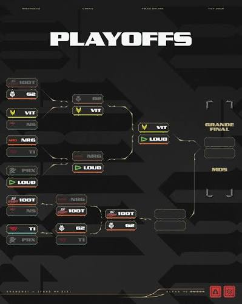

Playoffs

Grande Final: LOUD 3 x 1 Team Vitality
- Summit: LOUD 13 x 11 (virada épica)
- Lotus: LOUD 8 x 13
- Sunset: LOUD 13 x 5
- Haven: LOUD 13 x 10
MVP do torneio
O capitão chileno Roberto "erde" Lobos, de apenas 18 anos, liderou o elenco renovado da LOUD e foi eleito o MVP do torneio, superando o luto recente pelo falecimento de sua mãe apenas dois dias antes da estreia oficial da equipe.